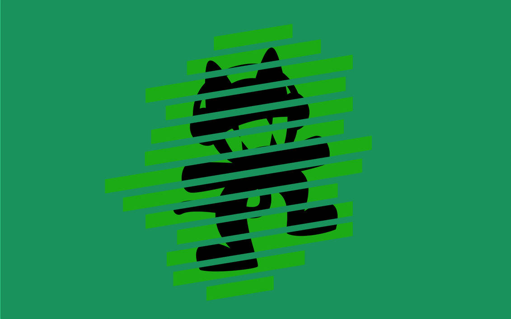

Algunos exponentes del Glitch Hop v: son:
Panda Eyes

Teminite
Tokyo Machine
Pegboard Nerds

Y no puede faltar Martin Garrix V:

Glitch Hop
El Glitch hop o Glitchstep es un género que fusiona el glitch, con el hip hop y el dubstep que se origina a mediados de los años 2000 en Estados Unidos y Europa. Aunque sus principales influencias son el hip hop y el dubstep con el paso del tiempo también ha adquiriendo elementos de estilos como el breakbeat, chiptune, IDM o drum and bass.
Musicalmente, está basado en breakbeats irregulares y caóticos, líneas de bajo glitchy y otros efectos de sonido habituales en la música glitch, como skips también se usa samples de rapeo con el cual se edita para que suene con tartamudeez o dañado, también se usa bastante la distorsión. Normalmente tiene un tempo de entre 80 y 110 BPM. Aunque no necesariamente use vocales o rap generalmente fusiona sus línea de bajo funky con los sonidos dubstep distorsionados y las técnicas de producción y efectos del glitch, como bitcrusher, chopping, beat repeater y skipping como sus principales técnicas, especialmente enfatizando el sonido de "videojuego" o chiptune. El género tomó su forma a mediados de los 2000 especialmente por los tempranos trabajos de Prefuse 73. Aunque con sonidos ya bastante volteados, cortados y distorsionados el glitch hop se alejó de sus raíces hip hop y el glitch hop moderno esta fuertemente influenciado por el dubstep, el drum and bass e incluso el neurofunk con el que crea un nuevo género llamado "Neurohop". Actualmente, en la mayoría de las ocasiones el glitch hop se confunde fácilmente, o tiene asociación con el moombahcore debido a que ambos son semejantes entre sí en sus componentes aunque tienen diferencias claramente explicadas al diferenciar sus características.
Algunos exponentes del Glitch Hop v: son:
Panda Eyes
Teminite
Tokyo Machine
Pegboard Nerds
Y no puede faltar Martin Garrix V: